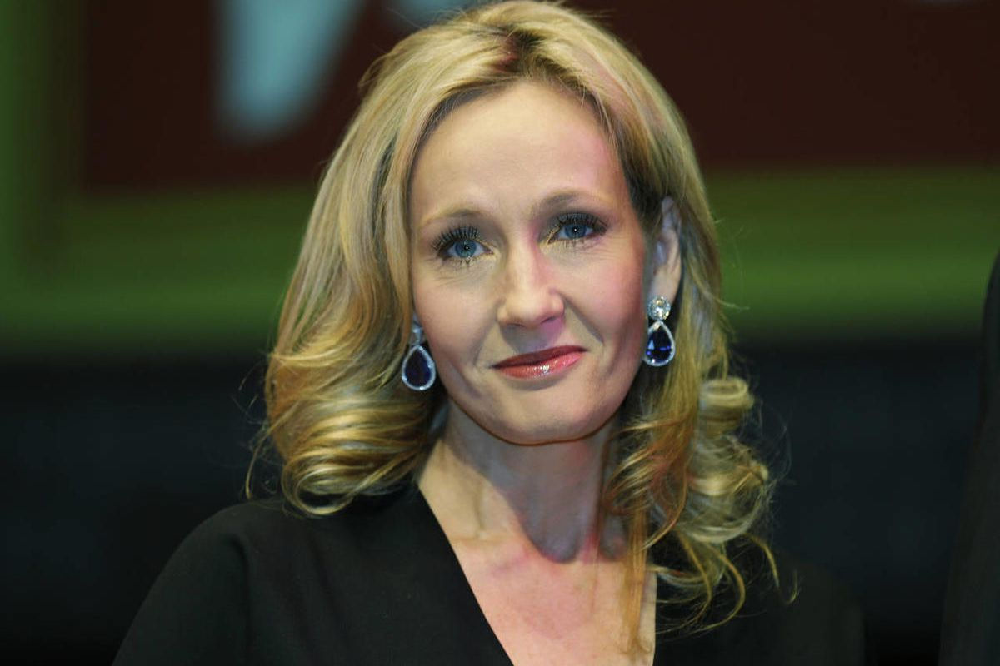

Joanne Rowling, known as J.K Rowling, born on 31 July 1965 in Yate, Gloucestershire. She is a British author, film producer, television producer and screenwriter. She is best known for writing the Harry Potter fantasy series, which has won multiple awards and sold more than 500 million copies, becoming the best-selling book series in history. The books are the basis of a popular film series, over which Rowling had overall approval on the scripts and was a producer on the final films.
In 1995, Rowling finished her manuscript for Harry Potter and the Philosopher's Stone which was typed on an old manual typewriter.  The book was submitted to twelve publishing houses, all of which rejected the manuscript. A year later she was finally given the green light (and a £1,500 advance) by editor Barry Cunningham from Bloomsbury, a publishing house in London. The decision to publish Rowling's book owes much to Alice Newton, the eight-year-old daughter of Bloomsbury's chairman, who was given the first chapter to review by her father and immediately demanded the next. Although Bloomsbury agreed to publish the book, Cunningham says that he advised Rowling to get a day job, since she had little chance of making money in children's books. Soon after, in 1997, Rowling received an £8,000 grant from the Scottish Arts Council to enable her to continue writing. In June 1997, Bloomsbury published Philosopher's Stone with an initial print run of 1,000 copies, 500 of which were distributed to libraries. Today, such copies are valued between £16,000 and £25,000. Five months later, the book won its first award, a Nestlé Smarties Book Prize. In February, the novel won the British Book Award for Children's Book of the Year, and later, the Children's Book Award. In early 1998, an auction was held in the United States for the rights to publish the novel, and was won by Scholastic Inc., for US$105,000. Rowling said that she "nearly died" when she heard the news. In October 1998, Scholastic published Philosopher's Stone in the US under the title of Harry Potter and the Sorcerer's Stone, a change Rowling says she now regrets and would have fought if she had been in a better position at the time.
Its sequel, Harry Potter and the Chamber of Secrets, was published in July 1998 and again Rowling won the Smarties Prize.
In December 1999, the third novel, Harry Potter and the Prisoner of Azkaban, won the Smarties Prize, making Rowling the first person to win the award three times running.
In January 2000, Prisoner of Azkaban won the inaugural Whitbread Children's Book of the Year award.
The fourth book, Harry Potter and the Goblet of Fire, was released simultaneously in the UK and the US on 8 July 2000 and broke sales records in both countries.
372,775 copies of the book were sold in its first day in the UK, almost equalling the number Prisoner of Azkaban sold during its first year.
In the US, the book sold three million copies in its first 48 hours, smashing all records.
Rowling said that she had had a crisis while writing the novel and had to rewrite one chapter many times to fix a problem with the plot.
Rowling was named Author of the Year in the 2000 British Book Awards.
A wait of three years occurred between the release of Goblet of Fire and the fifth Harry Potter novel, Harry Potter and the Order of the Phoenix.
Rowling later said that writing the book was a chore, that it could have been shorter, and that she ran out of time and energy as she tried to finish it.
The sixth book, Harry Potter and the Half-Blood Prince, was released on 16 July 2005.
It too broke all sales records, selling nine million copies in its first 24 hours of release.
In 2006, Half-Blood Prince received the Book of the Year prize at the British Book Awards.
The title of the seventh and final Harry Potter book was announced on 21 December 2006 as Harry Potter and the Deathly Hallows.
Harry Potter and the Deathly Hallows was released on 21 July 2007 and broke its predecessor's record as the fastest-selling book of all time.
It sold 11 million copies in the first day of release in the United Kingdom and United States.
The book's last chapter was one of the earliest things she wrote in the entire series.
Harry Potter is now a global brand worth an estimated US$15 billion, and the last four Harry Potter books have consecutively set records as the fastest-selling books in history.
The series, totalling 4,195 pages, has been translated, in whole or in part, into 65 languages.
The Harry Potter books have also gained recognition for sparking an interest in reading among the young at a time when children were thought to be abandoning books for computers and television.
In October 1998, Warner Bros. purchased the film rights to the first two novels for a seven-figure sum. Rowling had gained some creative control over the films, reviewing all the scripts as well as acting as a producer on the final two-part instalment, Deathly Hallows. Rowling, producers David Heyman and David Barron, along with directors David Yates, Mike Newell and Alfonso Cuarón collected the Michael Balcon Award for Outstanding British Contribution to Cinema at the 2011 British Academy Film Awards in honour of the Harry Potter film franchise.